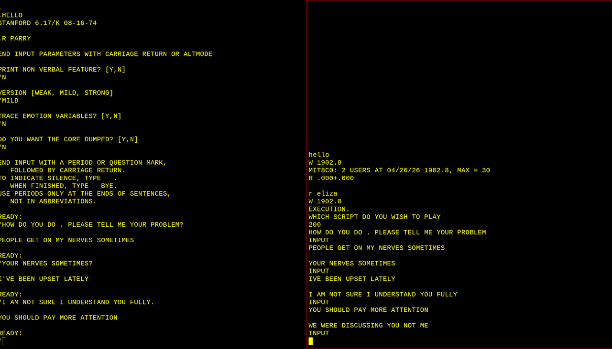

PARRY Parries Again
Reanimating the Famous Paranoid Chatbot (In a Day!)
Reported by Jeff Shrager on 2026-04-26
A few days ago, I posted an inquiry to the PiDP-10 forum asking whether anyone had a running IPL-V interpreter on their system. (I've been working on reanimating the earliest AI programs created by Simon, Newell, and Shaw, programs originally written in IPL-V, and a working interpreter would let me bring some of these back to life.)
I didn't get an IPL-V interpreter, but the thread took an unexpected turn that, within a single day, ended with PARRY, Kenneth Colby's famous "paranoid" chatbot from 1972, running again and, moreover, talking to the original ELIZA (!), in an amusing and amazing quasi-replication of RFC439, one of the most famous Internet RFCs: "PARRY Encounters the DOCTOR"
The Suggestion
Lars Brinkhoff, who has done a great deal of PDP-10 operating system reanimation, and with whom I'd corresponded previously around ELIZA, replied to suggest a different target: PARRY. I don't have a PDP-10 emulator, and I'm not very familiar with PDP-10 systems, but I'd studied PARRY in realtion to my work on ELIZA. I explained to Lars that PARRY was written in MLISP, a Lisp variant specific to the Stanford AI Lab's SAIL system. I'd looked at the PARRY source years ago but had never tried to run it myself.
As it turned out Lars happened to have a 1974 WAITS image, originally produced by Bruce Baumgart (https://saildart.org/) and Richard Cornwell (https://sky-visions.com/dec/waits.shtml). Almost immediately, Lars demonstrated that the image not only had a working MLISP, but that it came with a PARRY image that came up running (after locating and restoring a few missing files, see below).
The (Quasi-)Replication of PARRY Encounters the DOCTOR (RFC439)
Rupert Lane, who had done most of the work bringing the original ELIZA up on CTSS, not only immediately replicated Lars's PARRY reanimation, but went a step further, quasi-replicating the famous 1973 conversation documented in RFC 439, in which PARRY and ELIZA conversed across the early internet! (See image, below)
[I say "quasi-replicated" for two reasons. First, the ELIZA that participated in the 1973 conversation wasn't actually Joseph Weizenbaum's original ELIZA, but some downstream version of Bernie Cosell's Lisp ELIZA, a point confirmed by Anthony Hay, who is closely familiar with the many versions of ELIZA (most of which are accessible at ELIZAGen.org). Also, Rupert was copy-pasting the conversational turns between the two programs by hand, rather than connecting them over an emulation of the 1972 internet!]
So Rupert's quasi-replication has the original PARRY talking to Weizenbaum's original ELIZA, which is to say, not exactly the pair from RFC 439. (I'll bet PARRY would react very poorly to learn it had been chatting with an impostor.)
All of this: the question on the forum, Lars's suggestion, the working PARRY, Rupert's RFC 439 (quasi-)replication, happened in a single day, around April 25, 2026!
How to Run It Yourself
For anyone who wants to try this, the emulator to use is Richard Cornwell's sims fork. The original WAITS image, courtesy of Baumgart and Cornwell, lives here. That image already contains the executable file PARRY.DMP[1,3], but several supporting files are missing.
Based on the errors that came up when running PARRY, Lars added three files: QPERRY[PAR,BLF], PAR2.FIL[DIA,KMC], andERR.FIL[DIA,KMC]. He picked files with timestamps from late 1974 in order to stay consistent with the rest of the WAITS image. His updated image with these three additional files is available here.
Once WAITS is booted, type LOGIN 1,REG to log in, and then R PARRY to start PARRY.
Here's an example of one of Lars's first interactions with the running program:
.R PARRY
END INPUT PARAMETERS WITH CARRIAGE RETURN OR ALTMODE
PRINT NON VERBAL FEATURE? [Y,N]
*N
VERSION [WEAK, MILD, STRONG]
*MILD
TRACE EMOTION VARIABLES? [Y,N]
*N
DO YOU WANT THE CORE DUMPED? [Y,N]
*N
END INPUT WITH A PERIOD OR QUESTION MARK,
FOLLOWED BY CARRIAGE RETURN.
TO INDICATE SILENCE, TYPE .
WHEN FINISHED, TYPE BYE.
USE PERIODS ONLY AT THE ENDS OF SENTENCES,
NOT IN ABBREVIATIONS.
READY:
*HELLO.
Below I've attached the image provided by Rupert of the (quasi-)replicated conversation between PARRY the original ELIZA.
And here's the ELIZA kit to bring up the original ELIZA: https://github.com/rupertl/eliza-ctss
Where to Go Next
Lars suggested that it would be interesting to try files from other time brackets — earlier or later than late 1974 — and to attempt running or compiling the original MLISP source code rather than just the existing compiled image.
Also, Bernie Cosell's original BBN Lisp ELIZA, converted and runnable in Common Lisp, is available here on ELIZAGen.org, which means it should be possible to genuinely replicate RFC 439 with something much closer to the historical pairing.
References
Cerf, V. (1973) PARRY Encounters the DOCTOR. Network Working Group, Request for Comment (RFC) 439.
